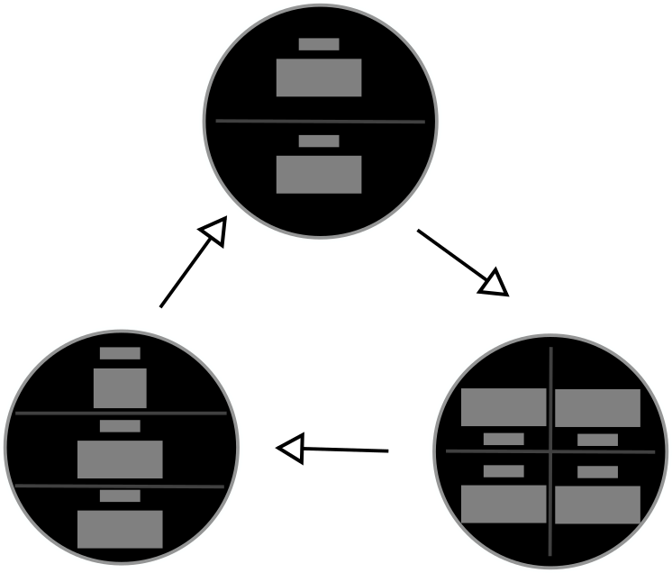
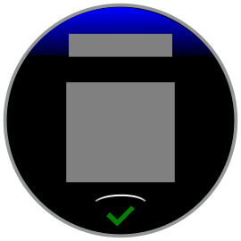
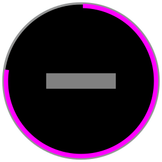
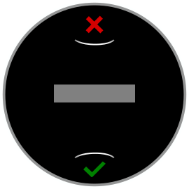
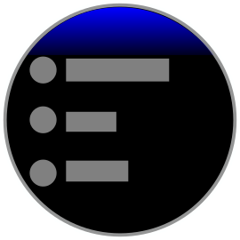
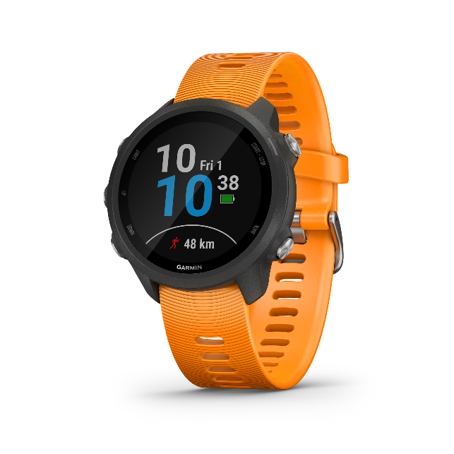
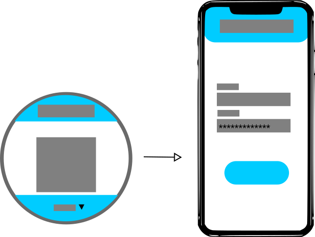

Designing Workflows and Interactions
Once you have your information architecture established, you can begin converting it into a workflow.
Hierarchical Navigation
The traditional Garmin user interface is hierarchical, where views are stacked based on the user's selections. Every device has a standard behavior for navigating the selections and backing out of the hierarchy, but these standard behaviors can be different from product to product.
Try to limit the depth of your navigational hierarchy. Focus on quick selections and not forcing the user to make multiple choices.
Behaviors
The following abstract behaviors apply to all Garmin devices.
| Select | Action to pick an item out of a set. |
|---|---|
| Start/Stop | Action to mark the beginning or ending. On button products, this is often the same as select. |
| Next/Previous | Action to either pick the next or previous item or navigate to the next or previous page in the page loop. On button products, this is often the up/down buttons. |
| Back | Action to back out of an app screen or view and return to the previous screen or view. |
| Menu | Action that brings up the settings menu for the application. |
Common Patterns
Take advantage of the following patterns found on Garmin devices when making the conversion from information architecture to workflow:
Page Loops
Page loops are carousels of views. When the user is in a page loop, the user interface presents a set of pages of information that provide different data and insights to the user. There are standard behaviors for going to the next and previous pages. Going past the last page typically loops the user back to the first page.
Dialogs
Dialogs are typically a modal screen with a message that the user must confirm reading to continue. These can be used for error messages, instructions or other forms of guidance.
Progress Bars
Progress bars tell the user to wait for an asynchronous action to be completed. There are two styles of progress bar: A standard progress bar that counts from 0% to 100%, and a busy progress bar for when the completion time cannot be quantified.
Confirmations
Confirmations are pages that confirm a user action. They can be used to confirm a decision by the user or add a point of friction if the user is exiting a flow.
Selection Menus
Selection menus allow a user to choose between two or more items. The items are presented on a one-dimensional list with optional iconography.
Settings Menus
A Settings menu is typically available from the base view of the application via the menu behavior. The settings menu typically allows the user to alter global settings for the app.

Interactions
When mapping out your workflow, it’s inevitable that you will face some decisions that cannot be solved by common UI patterns. At this point, you’ll need to think about the best way for a user to make the decision on the device.
Garmin designs products with this use case in mind, and one key consideration is if the product is touchscreen or push-button. For those who have primarily developed in the mobile space, physical buttons can be foreign. Touchscreens function well in indoor environments, but they can be difficult to use with gloves, when wet or when your body is in motion. For these situations, the tactile feedback of buttons makes for a better experience.
Connect IQ does allow for separate, tailored experiences for touchscreens versus push-button devices, but it also provides tools that allow a single implementation for both. Ultimately, it is up to you to choose if you want to tailor your app’s interaction model to these different input patterns or not.
Input Patterns
Here are the common input patterns for Garmin devices:
The five-button configuration has three buttons on the left and two buttons on the right. The buttons perform the following actions:
Top Left – Press to toggle the backlight. Press and hold to access the controls menu.
Middle Left – Press for a previous/up behavior. Press and hold for a menu behavior.
Bottom Left – Press for a next/down behavior.
Top Right – Press for a select behavior. Commonly used for the start/stop action on Garmin activities.
Bottom Right – Press for a back behavior.
The touchscreen two-button configuration combines a touchscreen with two navigation buttons:
The top button is a start/stop button. Press and hold to access the controls menu.
The bottom button performs the back behavior. Press and hold for a menu behavior.
The following actions are also standard:
Swiping up will perform the previous/up behavior.
Swiping down will perform the next/down behavior.
Menus can be dragged and flicked with the touch screen.
Tapping on a screen item performs a select behavior.
Swiping right to left performs a back behavior.
The touchscreen one-button edge configuration combines a touchscreen with a power button. All behaviors are done via the touch screen:
Swiping left to right will perform the previous/up behavior.
Swiping right to left will perform the next/down behavior.
Menus can be dragged and flicked with the touch screen.
Tapping on a screen item performs a select behavior.
Tapping the on-screen back button performs the back action.
Tapping the on-screen hamburger menu performs the menu action.
Mobile App Settings
Connect IQ allows the developer to have a configurable set of editable app settings available to the user in the Garmin Connect™ mobile app, the Connect IQ™ mobile app or in Garmin Express.
These settings can have a label and a prompt. The value can be any of the following:
Boolean
Number
Text
Phone
Email
URL
Date
Password
App settings can be a way to make your app more configurable without adding a complicated on-device UI. Connect IQ apps can be informed when the user changes their settings in mobile to provide instant feedback.
Mobile Authentication
Cloud services require users to authenticate themselves, most often with a username and password. On mobile devices, these flows are very easy, but on Garmin devices with limited input capabilities, entering credentials can be a challenge.
Connect IQ has a standard authentication method that allows the device to hand authentication over to the mobile device. The app can choose to hand authentication either to the Garmin Connect mobile app, or in System 5 to the Connect IQ store mobile app. This mechanism requires the cloud service to support OAUTH2 authentication via a web browser view.
At the point where you need the user to authenticate, include a dialog that directs the user to open the appropriate app on their phone. If the user has notifications enabled for the appropriate app on their mobile device, they will receive a mobile notification, as well. When they enter the mobile app, they will be prompted to begin authentication on their phone.
When credential entry is complete, the web view will close, and the credentials will be sent to the Connect IQ app. At this point, your Connect IQ app should continue with its workflow.
Best Practices
Here are some best practices for defining interactions in your app:
Keep input to a minimum. Garmin devices offer a wealth of information to the user. All this information should be available within three to four interactions with the device. The more the user is interacting with an app the less they are paying attention to the task at hand.
Stick with the up/down page loop model (versus left and right) for the best experience on both. Horizontal page loops do not map well to the button configuration.
If you’d like to have on-screen buttons for your touchscreen app, make sure the button actions are intuitive and obvious.
If your app is intended to be used during physical activity, try to limit the number of interactions in your app. Let the user focus on their activity and not your application.
Use text entry sparingly on device. Instead, use mobile app settings or generate useful default strings that the user can change later in mobile or on web.
Use the native menus, confirmations and progress bars. They will automatically have the product personality, and users will already be familiar with the interactions.
The back behavior is one of the most common behaviors on Garmin devices. Avoid modifying this behavior in your app.
Don’t require the user to use mobile app settings before they can use your app. The app should be usable without requiring the user to enter the settings flow.
Do not depend on the mobile notification for your authentication flow. Always give clear guidance directing the user to the appropriate mobile app or website within your Connect IQ app.